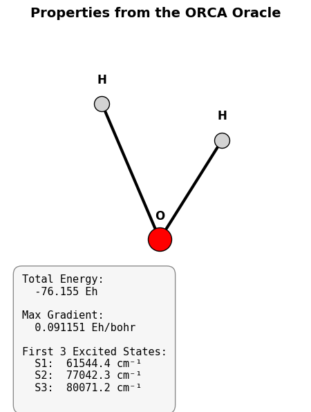

Interfacing with QC Oracles (ORCA)#
This tutorial demonstrates how to use the OrcaEngine to perform quantum chemistry calculations.
The Oracle module acts as a bridge between your ML methods and external computational chemistry software. We will explore two distinct ways to set up and execute an ORCA calculation:
Defining fidelity parameters directly in Python.
Using a pre-defined ORCA input template file. (recommended for general use)
Setting Up the Environment#
First, let’s create a temporary working directory and generate a simple XYZ file for a water molecule that we can use for our calculations.
[1]:
import os
import shutil
import numpy as np
import matplotlib.pyplot as plt
from mfml_qc.oracles import OrcaEngine
# this will be the working directory
workspace = "tutorial_workspace"
os.makedirs(workspace, exist_ok=True)
single_mol_xyz = os.path.join(workspace, "test_water.xyz")
# Write a dummy water molecule to an XYZ file
with open(single_mol_xyz, "w") as f:
f.write("3\nWater test molecule\nO 0.000 0.000 0.000\n")
f.write("H 0.000 0.757 0.587\nH 0.000 -0.757 0.587\n")
Method 1: Dynamic Parameter Generation#
The first way to run a calculation is to pass all your desired ORCA keywords directly as a Python dictionary. The OrcaEngine will automatically construct the .inp file for you.
[2]:
fidelity_params_dynamic = {
"method": "CAM-B3LYP",
"basis": "def2-TZVP",
"charge": 0,
"multiplicity": 1,
"nprocs": 2, # Request 2 cores
"maxcore": 2000, # Allocate max 2000 MB memory per core
"optional_tags": ["TightSCF", "RIJCOSX"],
"EnGrad": None, # we will not compute gradients (Forces)
# We can inject multi-line blocks for complex tasks like TD-DFT:
"custom_blocks": "%tddft\n ETol 1e-6\n RTol 1e-6\n nroots 10\nend",
}
# Initialize the engine.
# NOTE: Update 'orca_path' to point to your actual ORCA binary,
# e.g., '/opt/orca_5_0_3_linux_x86-64_openmpi411/orca'
orca_engine_1 = OrcaEngine(
orca_path="/../../../../opt/orca_5_0_3_linux_x86-64_openmpi411/orca"
)
try:
# We set clean=False so we can inspect the generated files later.
# return_outs=False means the engine will run but won't parse it automatically.
orca_engine_1.evaluate(
geometry=single_mol_xyz,
fidelity_params=fidelity_params_dynamic,
work_dir=os.path.join(workspace, "orca_dynamic"),
return_outs=False,
clean=False,
)
# We can manually define what to extract and parse the output file afterward:
orca_engine_1.properties_to_extract = {"Total Energy": "FINAL SINGLE POINT ENERGY"}
results_1 = orca_engine_1.parse_output(
os.path.join(workspace, "orca_dynamic", "calc.out")
)
print("Extracted Properties:", results_1)
# let's also take a look at the input file generated:
with open(os.path.join(workspace, "orca_dynamic", "calc.inp"), "r") as f:
print("\nGenerated Input File:\n", f.read())
# in case you do not have ORCA installed you can still see the input file generated
except FileNotFoundError:
print("ORCA executable not found in PATH! Skipping calculation execution.")
print("However, the engine successfully generated the input file!")
# Let's peek at the file it generated for us:
with open(os.path.join(workspace, "orca_dynamic", "calc.inp"), "r") as f:
print("\nGenerated Input File:\n", f.read())
Extracted Properties: {'success': True, 'Total Energy': -76.154551278952}
Generated Input File:
! CAM-B3LYP def2-TZVP TightSCF RIJCOSX
%maxcore 2000
%PAL nproc 2 end
%tddft
ETol 1e-6
RTol 1e-6
nroots 10
end
* xyzfile 0 1 /home/vvinod/MFML/docs/source/auto_examples/tutorial_workspace/test_water.xyz
Method 2: Using an Input Template#
If you have complex calculations with extensive blocks in your input files, you can simply write an ORCA template file on your local machine. The OrcaEngine will read this template and dynamically append the molecular geometry block at the bottom.
For example, you would create a file named TZVP_template.inp in your directory with the following contents:
! CAM-B3LYP def2-TZVP def2/J TightSCF RIJCOSX EnGrad
#%maxcore 2000
%PAL nproc 2 end
%tddft
ETol 1e-6
RTol 1e-6
nroots 10
maxdim 100
tprint 1E-10
triplets false
end
For the sake of this automated tutorial, we will write this string to a temporary file for you:
[3]:
template_file = os.path.join(workspace, "TZVP_template.inp")
# notice that we will now ask for the energy gradients (with EnGrad keyword)
template_content = """! CAM-B3LYP def2-TZVP def2/J TightSCF RIJCOSX EnGrad
#%maxcore 2000
%PAL nproc 2 end
%tddft
ETol 1e-6
RTol 1e-6
nroots 10
maxdim 100
tprint 1E-10
triplets false
end
"""
with open(template_file, "w") as f:
f.write(template_content)
fidelity_params_template = {
"template_file": template_file,
"charge": 0,
"multiplicity": 1,
}
# Define the exact text labels to search for in the ORCA output file
advanced_properties = {
"e_scf": "E(SCF) =",
"de_cis": "DE(CIS) =",
"e_tot": "E(tot) =",
"e_final": "FINAL SINGLE POINT ENERGY",
}
# Initialize a new engine, passing the properties we want to extract upfront
orca_engine_2 = OrcaEngine(
orca_path="/../../../../opt/orca_5_0_3_linux_x86-64_openmpi411/orca",
properties_to_extract=advanced_properties,
)
orca_ran_successfully = False
try:
# By setting return_outs=True, evaluate() automatically parses the output!
results_2 = orca_engine_2.evaluate(
geometry=single_mol_xyz,
fidelity_params=fidelity_params_template,
work_dir=os.path.join(workspace, "orca_template"),
clean=False,
return_outs=True,
)
print("Parsed Results:", results_2)
# %%
# Parsing Spectra and Gradients
# -----------------------------
# Because we included 'EnGrad' and '%tddft' in our template, ORCA generates
# gradients and absorption spectra. We can manually call the parser on the
# generated output file to extract these advanced arrays!
output_path = os.path.join(workspace, "orca_template", "calc.out")
results_advanced = orca_engine_2.parse_output(
output_file=output_path, parse_gradients=True, parse_spectra=True
)
if "gradients" in results_advanced:
print("First atom gradients (x, y, z):", results_advanced["gradients"][0])
if "tddft_spectrum" in results_advanced:
# The spectrum is returned as a list of state dictionaries
state_1 = results_advanced["tddft_spectrum"][0]
print("\nTD-DFT State 1:")
for key, val in state_1.items():
print(f" {key}: {val}")
orca_ran_successfully = True
except FileNotFoundError:
print("ORCA executable not found in PATH! Skipping calculation execution.")
with open(os.path.join(workspace, "orca_template", "calc.inp"), "r") as f:
print("\nGenerated Template Input File:\n", f.read())
Parsed Results: {'success': True, 'e_scf': -76.434968286, 'de_cis': 0.280417007, 'e_tot': -76.154551279, 'e_final': -76.154551278952}
First atom gradients (x, y, z): [ 5.50000000e-11 -1.13160000e-08 9.11508225e-02]
TD-DFT State 1:
state: 1
energy_cm1: 61544.4
wavelength_nm: 162.5
fosc: 0.034215932
px: 0.42782
py: 0.0
pz: 0.0
Visualizing the Oracle Results#
Let’s visualize the target water molecule. If ORCA successfully executed on your machine, we will overlay the computed properties (Energy, Gradients, and TD-DFT spectra) directly onto the plot!
[4]:
fig = plt.figure(figsize=(6, 6))
ax = fig.add_subplot(111, projection="3d")
# coordinates of our test water molecule
coords = np.array(
[
[0.000, 0.000, 0.000], # Oxygen
[0.000, 0.757, 0.587], # Hydrogen
[0.000, -0.757, 0.587], # Hydrogen
]
)
atoms = ["O", "H", "H"]
colors = ["red", "lightgrey", "lightgrey"]
sizes = [600, 250, 250]
# Plot the atoms
for i in range(3):
ax.scatter(
coords[i, 0],
coords[i, 1],
coords[i, 2],
c=colors[i],
s=sizes[i],
edgecolors="k",
depthshade=False,
zorder=5,
)
# Add small text labels next to atoms
ax.text(
coords[i, 0],
coords[i, 1],
coords[i, 2] + 0.1,
atoms[i],
fontsize=12,
ha="center",
weight="bold",
zorder=10,
)
# Draw bonds (O-H)
ax.plot(
[coords[0, 0], coords[1, 0]],
[coords[0, 1], coords[1, 1]],
[coords[0, 2], coords[1, 2]],
"k-",
lw=3,
zorder=1,
)
ax.plot(
[coords[0, 0], coords[2, 0]],
[coords[0, 1], coords[2, 1]],
[coords[0, 2], coords[2, 2]],
"k-",
lw=3,
zorder=1,
)
ax.set_axis_off()
ax.set_title("Properties from the ORCA Oracle", fontsize=14, weight="bold", pad=20)
ax.view_init(elev=20, azim=45)
# text box of properties
text_str = ""
if orca_ran_successfully and results_2.get("success", False):
energy = results_2.get("e_final", "N/A")
text_str += f"Total Energy:\n {energy:.3f} Eh\n\n"
if "gradients" in results_advanced:
max_grad = np.max(np.abs(results_advanced["gradients"]))
text_str += f"Max Gradient:\n {max_grad:.6f} Eh/bohr\n\n"
if "tddft_spectrum" in results_advanced:
text_str += "First 3 Excited States:\n"
for state in results_advanced["tddft_spectrum"][:3]:
text_str += f" S{state['state']}: {state['energy_cm1']:>8.1f} cm⁻¹\n"
else:
text_str += "ORCA Binary Not Found.\nDisplaying Geometry Only."
# Add the property box to the top left of the figure
props = dict(
boxstyle="round,pad=0.8", facecolor="whitesmoke", alpha=0.9, edgecolor="gray"
)
ax.text2D(
0.05,
0.2,
text_str,
transform=ax.transAxes,
fontsize=11,
verticalalignment="top",
bbox=props,
family="monospace",
)
plt.tight_layout()
plt.show()
# Clean up our tutorial workspace (optional)
shutil.rmtree(workspace)
